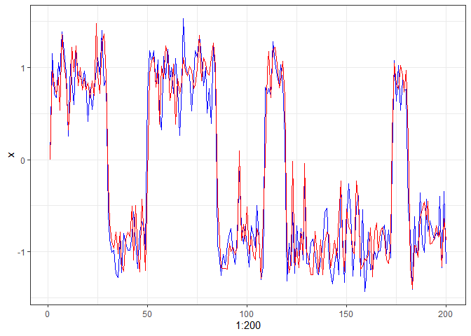
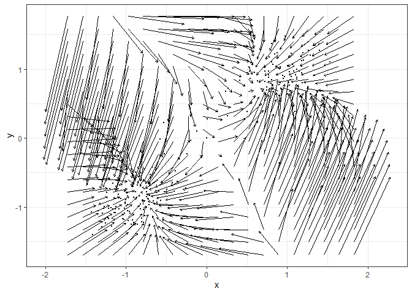
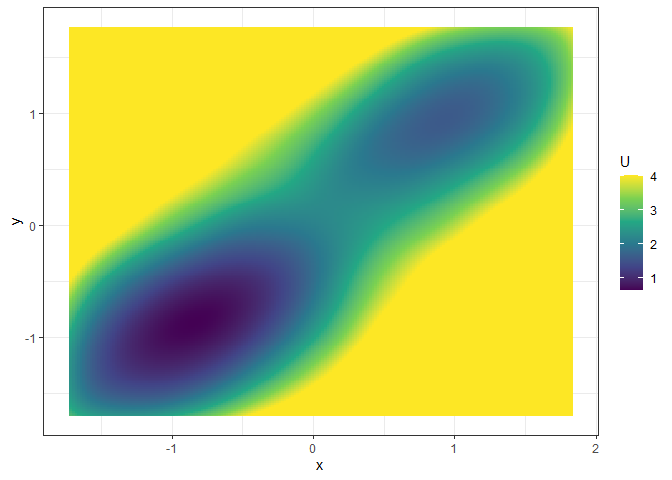

A toolbox for estimating vector fields from intensive longitudinal data, and construct potential landscapes thereafter. The vector fields can be estimated with two nonparametric methods: the Multivariate Vector Field Kernel Estimator (MVKE) by Bandi & Moloche (2018) https://doi.org/10.1017/S0266466617000305 and the Sparse Vector Field Consensus (SparseVFC) algorithm by Ma et al. (2013) https://doi.org/10.1016/j.patcog.2013.05.017. The potential landscapes can be constructed with a simulation-based approach with the simlandr package (Cui et al., 2021) https://doi.org/10.31234/osf.io/pzva3, or the Bhattacharya et al. (2011) method for path integration https://doi.org/10.1186/1752-0509-5-85.
Installation
You can install the development version of fitlandr from GitHub with:
# install.packages("devtools")
devtools::install_github("Sciurus365/fitlandr")Example
We use the following bistable dynamic system to illustrate the use of fitlandr. The test data set is created as follows.
single_output_grad <- simlandr::sim_fun_grad(length = 200, seed = 1614)
library(tidyverse)
ggplot(data = single_output_grad %>% as_tibble()) +
geom_path(aes(x = 1:200, y = x), color = "blue") +
geom_path(aes(x = 1:200, y = y), color = "red") +
theme_bw()
Fit the vector field with MVKE (see ?MVKE for the explanations of parameters):

Fit the potential landscape:
future::plan("multisession")
set.seed(1614)
l2 <- fit_3d_vfld(v2, .sim_vf_options = sim_vf_options(chains = 16, stepsize = 1, forbid_overflow = TRUE), .simlandr_options = simlandr_options(adjust = 5, Umax = 4))
#> ℹ Simulating the model✔ Simulating the model [28.8s]
#> ℹ Constructing the landscape✔ Constructing the landscape [2.5s]
plot(l2, 2)
# equivalent:
# s2 <- sim_vf(v2, chains = 16, stepsize = 1, forbid_overflow = TRUE)
# l2 <- simlandr::make_3d_static(s2, x = "x", y = "y", lims = v2$lims, adjust = 5, Umax = 4)